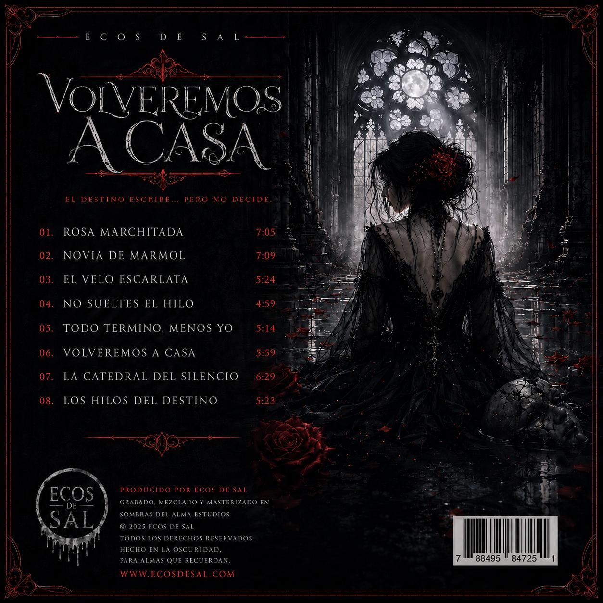

OFFICIAL WEBSITE
Metal gótico · Rock alternativo · Historias que sobreviven a la muerte.
DESCUBRIR ↓BUQUE INSIGNIA
Rosa Marchitada
La canción que representa el universo de Ecos de Sal.

ECOS DE SAL
Rosa Marchitada
Una historia de amor, pérdida y permanencia. La canción que se convirtió en una de las piezas centrales del proyecto.
ÚLTIMO ESTRENO
La Última Promesa
El lanzamiento más reciente de Ecos de Sal.

La Última Promesa
Cuando el amor se niega a morir, solo queda una última promesa.
Ver en YouTube ↗LANZAMIENTO
Volveremos a Casa
El álbum de 10 canciones que reúne una parte esencial del universo de Ecos de Sal.

«El destino escribe… pero no decide.»
El lanzamiento discográfico completo reúne diez canciones dentro del universo de Ecos de Sal.

UNIVERSO
Venas de Obsidiana
Una nueva historia dentro del universo oscuro de Ecos de Sal.
ENCUÉNTRANOS
Redes & Streaming
Escucha, descubre y sigue a Ecos de Sal.
PRÓXIMAMENTE
Merchandising
La oscuridad también se lleva puesta.
TIENDA EN PREPARACIÓN